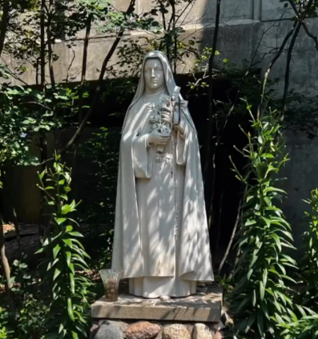
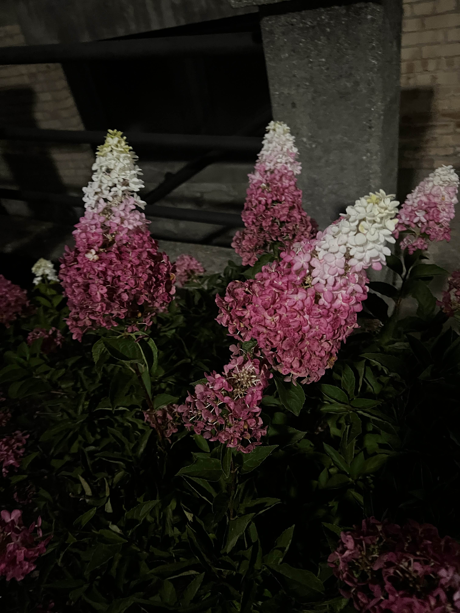

Places I've Been
Traveling just anywhere is an experience I recommend. I enjoy experiencing new places and cultures. So far, I’ve had the chance to explore Wisconsin.

Holy Hill
A beautiful spot in Wisconsin known for its stunning views and a historic church.

Walking Trail
Enjoying a peaceful walk through the scenic trails of Wisconsin.

Winter Wonderland
A beautiful winter scene in Wisconsin, showcasing the serene snow-covered landscape.

Flower Garden
Admiring the vibrant flowers from a local garden in Wisconsin.